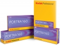

Portra 160使用柯达先进的立方体乳剂，与PORTRA 400类似， 采用柯达VISION Film技术且将染料敏化材质融入品红乳剂层，使图片颗粒更为细腻，呈现平滑自然的肤色。它是柯达PORTRA系列专业胶片中的典范，也是人像、时尚和商业摄影的理想选择，在户外和室内环境均表现优异。Portra 160提供35mm, 120/220, 4×5和8×10四种规格尺寸，可进行优化扫描和放大。
现在这个时候拿胶片拍人也就这个最合适了。
非常有味道的一种色彩，很难形容但非常喜欢。
贵
算是不错的专业卷了，可惜出生太晚，早已不是胶片的天下了。
晴天下人像肤色和环境色都算自然，颗粒还算细腻。室内光线OK的话也行。
说不好。
目前好买到的柯达专业负片中，只有EKTAR100和PROTRA160
专业的素质，ISO160有着100的细腻和200的用途。颗粒很细，但是不好用，对场景挑，感觉室内、人像比室外风景和扫街好，也不能怪，这个卷就不是扫街卷。
目前价格太高，比EKTAR100都高，用的人不多，冲扫的要求高，最好别用民用扫描仪，易迈康之类会有惊喜